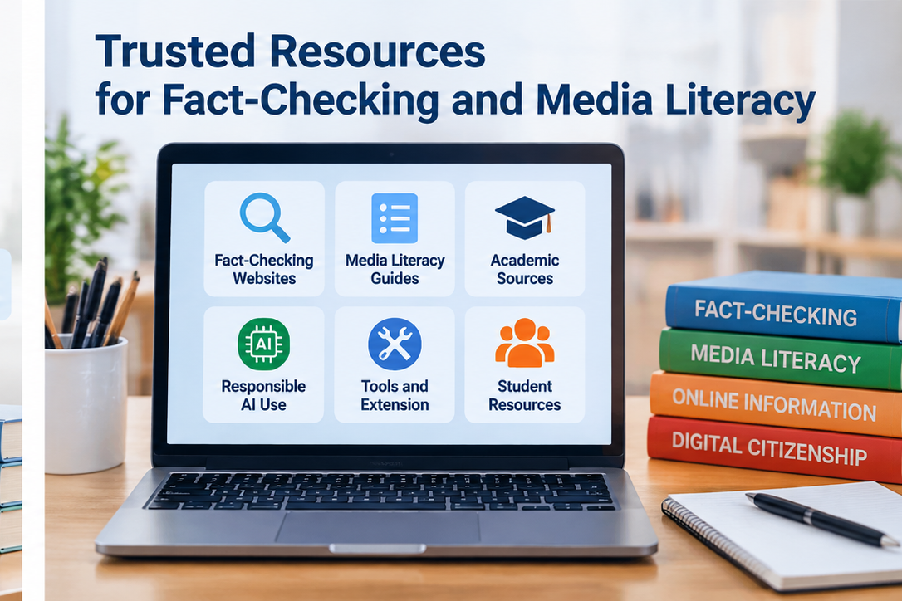

Google Fact Check Explorer
Search published fact-checks from participating organizations and look for previous checks of a claim, topic, or image.
Open Fact Check Explorer ↗Resources
No single website can verify everything. Use these resources as starting points, then read the underlying evidence and compare multiple sources.

Search published fact-checks from participating organizations and look for previous checks of a claim, topic, or image.
Open Fact Check Explorer ↗Reuters verifies claims and visual material circulating online and explains the evidence behind its conclusions.
Visit Reuters Fact Check ↗Associated Press fact-checking articles examine widely circulated claims and provide context from reporting and official sources.
Visit AP Fact Check ↗Snopes investigates online rumors, viral claims, manipulated media, and long-running misinformation narratives.
Visit Snopes ↗A short educational lesson about original sources, multiple perspectives, fact versus opinion, and verifying before sharing.
Open TED-Ed lesson ↗For policies, research findings, public statements, and statistics, look for the original institution, document, dataset, transcript, or study before relying on summaries.
Review the five-step process →Choose the right tool
| What you need | Useful starting point | What to do next |
|---|---|---|
| Has this claim been checked before? | Google Fact Check Explorer | Open the original fact-check and review its evidence. |
| Is a viral image or video authentic? | Reuters Fact Check or Google image-based fact-check search | Trace the earliest available upload and compare visual details. |
| Is a news claim missing context? | AP, Reuters, Snopes, plus the original source | Compare dates, quotations, documents, and independent coverage. |
| Did AI give me a reliable answer? | Primary sources and independent verification | Check every important factual claim and quotation outside the AI response. |
Self-check
External resource descriptions were checked against current official pages in October 2026.